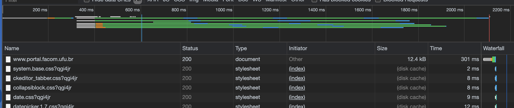
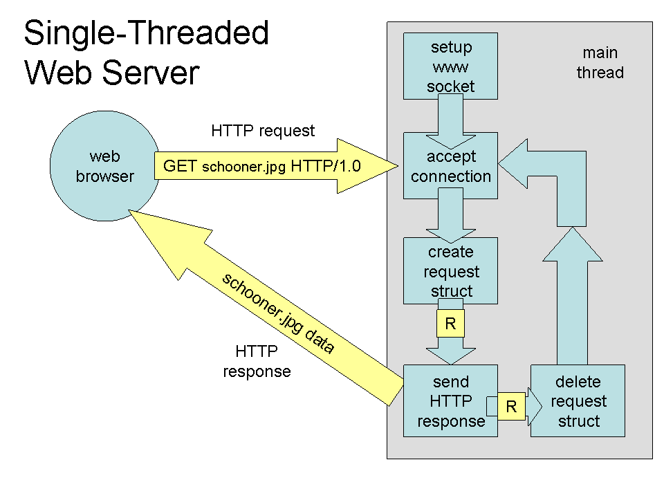
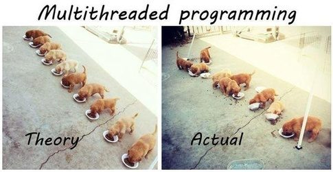

Concorrência
Quando pensamos um sistema distribuído, é natural que o façamos em termos do paralelismo inato que surge do uso de múltiplos processos executando ao mesmo tempo em (normalmente) diferentes hosts. Contudo, é importante pensar também em termos de paralelismo dentro de cada um dos processos que compõem o sistema pois, no mínimo, componentes podem necessitar manter várias "conversas" em paralelo uns com os outros. Por isso, é "impossível" pensar em sistemas distribuídos sem pensar em concorrência na forma de múltiplos threads nos processos.
Relembremos o exemplo de sistema implementado usando sockets, em que um processo cliente se conecta ao servidor para receber uma saudação.
A interação entre tais processos acontece de forma sincronizada, lock-step, em que o cliente requisita o serviço e ficava bloqueado esperando a resposta do servidor para então prosseguir em seu processamento (printf), e o servidor fica bloqueado esperando requisições que atende e então volta a dormir.
Este cenário, apresentado na figura a seguir, mostra que apesar do uso de processos distintos e da concorrência na execução dos processos, temos um baixo grau de efetivo paralelismo; a requisição (2) só é processada depois que a resposta (1) é enviada.
Este modelo de sincronização entre as partes comunicantes é um exemplo de E/S bloqueante. O principal ponto positivo desta estratégia é a simplicidade do código e o principal ponto negativo é a limitação do paralelismo no uso de recursos, uma das razões de ser da computação distribuída.
Para usarmos melhor os recursos disponíveis, tanto do lado dos clientes quanto servidores, temos então que pensar em termos de eventos sendo disparados entre os componentes, que devem ser tratados assim que recebidos ou tão logo haja recursos para fazê-lo. Estes eventos correspondem tanto a requisições quanto a respostas (efetivamente tornando difícil a distinção).
No modelo bloqueante, quando um evento é disparado (no exemplo, a requisição), o sistema fica bloqueado até que um evento específico seja observado (no exemplo, a chegada da resposta). Sempre que possível, um componente não deve ficar esperando por eventos em específico, aproveitando a chance executar outras tarefas; quando eventos são recebidos, são então atendidos. Esta é a forma de fazer E/S assíncrona.
Dado que processos interagem com a rede usando sockets, cuja interface mais simples para operações de leitura é bloqueante, neste curso não falaremos especificamente sobre E/S assíncrono1 e por isso, para vermos como aumentar a concorrência no sistema, é necessário falar de multithreading e as várias formas em que aparecem nos sistemas.
Há duas razões claras para estudarmos multithreading. A primeira, de ordem prática, é a discutida acima: permitir o desenvolvimento de componentes que utilizem "melhormente" os recursos em um host. A segunda, didática, é o fato que muitos dos problemas que aparecem em programação multithread, aparecem em programação multi-processo (como nos sistemas distribuídos), apenas em um grau de complexidade maior. Para relembrar, há várias diferenças entre threads e processos, mas a abstração é essencialmente a mesma:
| Processo | Thread | |
|---|---|---|
| Quasi definição | Instância de um programa | "Processo leve" |
| Função de entrada | main |
função "qualquer" |
| Compartilhamento de código e dados | Privado ao processo | Compartilhado pelos threads |
| Estado | Código, Stack, Heap, descritores (e.g, file descriptors), controle de acesso | Stack, variáveis locais |
| Comunicação | IPC (Inter Process Communication): sockets, FIFO, memória compartilhada, etc | IPC, mutex, variáveis de condição, semáforos, etc |
| Nível da implementação | Sistema operacional | Diferentes implementações |
| API | Posix, C++, Java, ... | |
| Efeito de E/S | Mudança de contexto para outro thread mesmo sem terminar quantum | Mudança de contexto para outro thread do mesmo processo |
| Tempo de criação, terminação e mudança de contexto | Demora mais | Demora menos |
Vejamos como o uso de múltiplos threads podem melhorar o desenvolvimento de sistemas distribuídos na prática.
Considere os exemplos de clientes e servidores vistos anteriormente.
Imagine que em vez do serviço simples feito no exemplo, o servidor retorne uma página Web.
Detalhes do protocolo seguido por navegadores e servidores serão vistos mais tarde. Por agora, considere apenas que uma requisição GET arquivo.html será enviada para o servidor que lerá o arquivo especificado do sistema de arquivos; como você sabe, ler um arquivo é uma operação lenta e que não requer CPU.
Threads no Cliente
Do ponto de vista do cliente, a vantagem do uso de múltiplos threads são claras: permite lidar com várias tarefas concorrentemente, por exemplo solicitar CSS, HTML e imagens concorrentemente, escondendo latência das várias operações, e permite organizar código em blocos/módulos.
Se você usar o console de desenvolvimento do navegador, verá como múltiplos arquivos são baixados em paralelo quando acessa um sítio.
A figura a seguir mostra a carga do sítio da Facom.
O primeiro arquivo, index.html é baixado individualmente, mas uma vez que isso acontece e são determinados quais os demais arquivos necessários, requisições concorrentes são disparadas, minimizando o tempo total da operação.

Como outros exemplos, considere um formulário online em que a validação de um campo é executada enquanto o campo seguinte está sendo preenchido, ou um serviço de email em que arquivos são carregados enquanto a mensagem é confeccionada.
Threads Servidor
Do lado dos servidores há diversas possibilidades de uso de threads para aumentar o paralelismo no processamento de requisições, melhor utilizando recursos disponíveis e melhorando a experiência do usuário.
Single-threaded
A estratégia mais simples de se implementar é a de usar apenas um thread, como temos feito até agora. Considere um servidor Web com esta esta característica; o fluxo no tratamento de uma requisição é exemplificado na pela figura a seguir:

- O servidor é iniciado, criando o socket e invocando accept
- o cliente envia a requisição para o servidor
- o servidor aceita a conexão em seu único thread
- uma tarefa é gerada para ler o arquivo
- o arquivo é lido, de forma bloqueante, e uma resposta para o cliente é preparada
- a resposta é enviada para o cliente, de forma bloqueante
- a requisição é descartada
- o thread do servidor volta a esperar uma nova requisição
Se novas requisições forem recebidas enquanto o servidor está executando os passos de 2 a 6, sejam requisições paralelas do mesmo cliente ou de um outro cliente, estas ficarão bloqueadas. A espera será maior quanto mais o servidor demorar para atender à primeira requisição, por exemplo, se precisar consultar um banco de dados ou carregar o arquivo requisitado do disco. Para evitar que isto ocorra, o servidor pode usar mais threads.
Thread per request
O servidor pode criar um novo thread para cada nova requisição, permitindo que múltiplas requisições sejam tratadas concorrentemente. Isto é, mesmo que um thread do servidor seja bloqueado por muito tempo, somente um cliente terá sua resposta atrasada (excluindo-se necessidades de coordenação entre múltiplos threads) e outros clientes podem continuar sendo atendidos normalmente, como mostrado na figura a seguir.

Lembre-se, entretanto, que o número de threads que se pode criar em um SO é limitado, pois cada thread usa recursos do SO. Além disso, a criação e destruição de threads é cara pois é feita por meio de uma chamada de sistema, pelo kernel, e portanto implica em alternar entre modo usuário e modo protegido. Se possível, devemos evitar a criação de novos threads em aplicações com requisitos de desempenho, e recliclá-los pode ser uma boa estratégia.
Thread pool
Para reciclarmos threads, podemos criar pools, um balde de threads que são usados quando necessário e devolvidos para o balde quando não mais. No cerne desta abordagem, junto com o pool de threads, fica uma fila bloquenante na qual tarefas são inseridas e de onde os threads tentam retirá-las.
Como a fila é bloqueante, se estiver vazia, o thread é bloqueado e para de consumir recursos. Tão logo nova tarefa seja inserida, a fila acorda os threads para que a processem. Para garantir a corretude no processamento, a fila deve ser thread-safe, isto é, que se mantem correta mesmo quando múltiplos threads operam nela tanto para inserir quanto remover tarefas.
Na figura, um thread principal é encarregado de receber as requisições e colocar na fila bloqueante; se a fila fica cheia, o thread principal fica bloqueado esperando por espaço, fazendo com que novas conexões tenham que esperar.

Os threads do pool removem uma tarefa da fila, a tratam e, ao final do atendimento, pegam nova requisição na fila, em um loop infinito; requisições que demandam menor processamento liberam o thread mais rapidamente para que pegue nova tarefa. Se todas as tarefas são pequenas, os threds ficarão bloqueados por muito tempo. Se todas são grandes, as tarefas se acumularão na fila. Por isso é importante dimensionar bem o tamanho to pool, ou mesmo torná-lo dinâmico para que use menos recursos (threads) quando não necessário e não deixe tarefas pendentes por muito tempo.
Se considerarmos que cada tarefa na verdade tem várias partes, é possível refinar mais este modelo, quebrando o processamento em vários pools.
Estágios
Na arquitetura baseada em estágios, e.g., Staged Event-Driven Architecture, SEDA, cada estágio, cada estágio é responsável por processar uma parte da tarefa, passada adiante até que seja completada.2

Uma característica importante deste modelo é que cada estágio pode ser escalado individualmente de acordo com a demanda uma vez que cada estágio tem seu próprio pool. Por exemplo, se um estágio faz algum cálculo leve, então poucos threads são necessários ao mesmo. Já um estágio que precise efetuar E/S talvez precise mais threads, uma vez que estes ficam bloqueandos enquanto a operação é executada. 3
Desafios
Embora a ideia de usar múltiplos threads seja melhorar desempenho e experiência do usuário, fazê-lo efetivamente é não trivial. Vejamos por exemplo o problema do falso compartilhamento; considere o seguinte pseudo-código:
1 2 3 4 5 6 7 8 9 10 11 12 13 14 15 | |
Cada um dos threads criados acessa exclusivamente uma das variáveis. Logo, não há interferência entre as threads e se cada uma for colocada em um processador diferente, executarão no máximo de seu potencial, correto?
Não exatamente, pois mesmo este código simplíssimo pode sofrer de falso compartilhamento.
Isto acontece, por exemplo, se cada linha da cache do sistema onde este programa executa tiver 8 ou mais bytes de comprimento. Como tanto X quanto Y no programa tem 4 bytes, as duas variáveis poderão ficar na mesma linha da cache e toda vez que uma thread modificar uma variável a cache da outra será invalidada para leitura.

Para que isto não ocorra, é preciso se certificar que as variáveis fiquem em linhas diferentes da cache; no exemplo, poderia-se definir X e Y como vetores do tamanho da linha da cache e usar efetivamente apenas a primeira posição de cada vetor.
Se o compartilhamento for real, por exemplo se ambos os threads usarem a variável X, então o problema não será tão facilmente resolvível. Neste caso, poder-se-ia definir afinidade entre threads, isto é, notar quais threads compartilham estado de forma que threads afins sejam colocados nos mesmos processadores e compartilhem as mesmas memórias. Isto torna muito mais fácil e eficiente o controle de concorrência, do ponto de vista do SO e hardware.

Multiprogramação

Fazer esta divisão pode ser complicado pois a relação de compartilhamento entre threads pode ser complexa em função da tarefa sendo resolvida, por exemplo, se diferentes threads compartilharem diferentes variáveis uns com os outros. Ainda que que uma configuração ótima em termos de afinidade exista, encontrá-la pode ser custo. Ainda assim, precisamos lidar com estado compartilhado e enfrentar condições de corrida de forma a não levar a inconsistências na executação de tarefas, nos referindo a inconsistência aqui como qualquer desvio no comportamento do programa daquilo que foi especificado pelo desenvolvedor. Para isso, usamos as primitivas de controle de concorrência que estudaram em SO, que também tem seus problemas em potencial, como deadlocks e inanição. Veja o seguinte vídeo para uma análise de diversos pontos importantes no uso de multithreads.
Estado
A questão das regiões críticas está intimamente relacionada à questão da manutenção de estado nos servidores. Quanto a este respeito, podemos classificar servidores como stateful e stateless, dois termos que ouvirão frequentemente enquanto trabalhando com SD.
To state or not to state?
- Complexidade e desempenho
- Falhas
- Balanceamento
O state nos dois nomes se refere ao estado mantido por um serviço para atender a requisições. Caso mantenha estado, por exemplo informando em quais arquivos o cliente está interessado, fica mais fácil para o servidor continuar o trabalho feito em requisições anteriores.
Stateless
Imagine por exemplo que um cliente esteja acessando linhas em um banco de dados, de forma paginada: a cada requisição, o cliente recebe \(n\) novas linhas para processar e, quando estiver pronto, requisite \(n\) novas linhas. Imagine quão infeficiente seria se o servidor seguisse o seguinte fluxo:
- receba requisição informando a última linha lida
- recalcule todas as respostas para consulta
- salte até a linha informada pelo cliente
- retorne as próximas \(n\) linhas para o cliente
- feche o resultado da consulta.
Stateful
Se em vez disso o servidor mantiver um mapa com consultas recentes, em que a chave seja algum identificador do cliente e o valor uma visão dos resultados; a cada nova requisição, basta o servidor resgatar a visão usando o identificador do cliente e selecionar as seguintes \(n\) entradas da visão. Manter o mapa como estado acelera o processamento e melhora a experiência do usuário, neste caso. Por outro lado, considere que múltiplos clientes fazem consultas concorrentemente: quanto recurso seria necessário para que o servidor mantenha a visão de todos os clientes?
Também a complexidade do servidor aumenta. Considere as algumas de muitas perguntas possíveis neste cenário:
- Como o servidor mantém as respostas a novas requisições consistentes com as respostas anteriores? E se linhas são removidas ou inseridas no banco de dados?
- Se múltiplos servidores existem, como compartilhar os estado entre os mesmos?
- Se o cliente resolva não fazer mais requisições, por exemplo por ter encontrado o que procurava, por quanto tempo o servidor deve manter a visão aberta?
Como você já deve ter percebido, ambas as abordagens, stateless e stateful, tem suas vantagens e desvantagens.
Sessão
Essencialmente, o servidor stateless não mantem informação sobre a sessão do cliente e requer que a cada nova requisição, quaisquer informações necessárias para realizar a tarefa requisitada sejam novamente fornecidas ao servidor. No caso stateful, o servidor pode se lembrar, como no exemplo anterior, até onde o trabalho já foi executado, quais arquivos o cliente manipulou (e mantê-los abertos), qual o endereço o cliente e enviar-lhe notificações importantes (e.g., "Novo dado inserido!").
Falhas
Enquanto servidores stateful obviamente levam a melhor desempenho no happy path (contanto que recursos suficientes sejam providos), no caso de falhas, serviços stateless tendem a voltar ao ar mais rapidamente, uma vez que não há estado que precise ser recuperado. Pela mesma razão, clientes que percebem que um servidor falhou podem rapidamente se dirigir a outros servidores e continuar suas requisições de onde estavam, uma vez que são detentores de toda a informação necessária para o próximo passo do processamento.
Lidar com falhas também introduz outro requisito aos servidores: memória estável. Para que possa o recuperar o estado anterior à falha, o servidor precisa colocar o estado em algum lugar que independa do processo para se manter, por exemplo, nvRAM, SSD ou spindles. A perda deste estado implicaria na incapacidade de prover o serviço corretamente. Um projeto stateless não depende deste estado e por isso pode ser mais rapidamente recuperado, replicado ou substituído.
Stateless x Stateful
Não surpreendentemente, a resposta para "qual abordagem é melhor, stateful ou stateless?" é depende. Ambos as opções tem suas vantagens e desvantagens e para alguns serviços apenas uma opção será viável. Se seu serviço precisa manter estado (um SGBD, por exemplo), ele terá que manter estado, mesmo que não sobre clientes. Veja um pequeno comparativo das características das duas abordagens.
| Stateless | Stateful |
|---|---|
| Resultado depende da entrada | Depende do histórico de entradas |
| Qualquer servidor pode atender | Mesmo servidor deve atender |
| Não promete notificar o cliente | Assina contrato com o cliente |
| Repete operações | Aproveita resultados anteriores |
| Não fica inconsistente com relação ao cliente | Pode ficar inconsistente se perder estado ou conexão feita com outro servidor |
| re-autenticação (mesmo que simplficada) a cada requisição | Autentica no começo da sessão |
Multithread na prática
POSIX
POSIX Threads ou PThreads, são uma definição aberta de como threads devem funcionar em sistemas operacionais. Várias implementações desta especificação estão disponíveis tanto para sistemas Unix, que se esforçam para ser compatíveis com especifições POSIX, mas também para Windows, via subsistemas que compatibilizam diferentes API. Além disso, mesmo implementações não POSIX tem funcionalidade equivalentes e, por este motivo, entender POSIX servirá de base para entender quaisquer API para programação multi-threaded.
Para se definir um thread, é necessário definir uma função de entrada, que será para o thread como a função main é para o processo em si.
No exemplo a seguir a função foi definida com retorno void * e com único parâmetro, também void *; esta é uma obrigatoriedade para funções de entrata PThread.
Observe contudo que void * pode ser tratado como um blob para mascarar outros tipos de dados, por exemplo um vetor, um ponteiro para uma enumeração ou uma struct.
Também observe que a função tem uma variável local my_id que só está definida no contexto da thread (linha 8); se múltiplas threads forem instanciadas, cada uma terá a sua versão da variável.
Há também uma variável global thread_count, compartilhada por todas as instâncias (linha 5).
1 2 3 4 5 6 7 8 9 10 11 | |
Um thread é criado pela função pthread_create (linha 14), que coloca em um pthread_t um handle para o thread.
O handle do thread deve ser alocado previamente à função de criação do thread (linha 11).
A função recebe como parâmetros opções para configuração, a função de entrada, e o parâmetro do tipo void *.
1 2 3 4 5 6 7 8 9 10 11 12 13 14 15 16 | |
É possível esperar pelo fim da execução do thread usando o pthread_join, que recebe como parâmetro o handle do thread e um ponteiro para onde o resultado da função de entrada deve ser colocado, do tipo void ** (linha 2). No exemplo, nenhum retorno é esperado, então um endereço nulo é passado como parâmetro.
Ao final da execução, o handle deve ser liberado (linha 4).
1 2 3 4 | |
Para executar um programa PThread, compile com
1 | |
1 | |
Agora experimente
1 | |
pthread_create. Alguns exemplos interessantes:
pthread_tryjoin- espera thread terminar-
pthread_exit- termina a thread e retorna resultadoAn implicit call to
pthread_exit()is made when a thread other than the thread in whichmain()was first invoked returns from the start routine that was used to create it. The function's return value serves as the thread's exit status. Manual depthread_exit. -
pthread_attr_setaffinity_np- ajusta afinidade dos threads.
Python
Em Python, como seria de se esperar, há várias formas de se trabalhar com threads.
O exemplo a seguir usa o pacote thread e é essencialmente um envólucro POSIX.
1 2 3 4 5 6 7 8 9 10 11 12 13 14 15 16 17 18 19 20 21 | |
Já o próximo exemplo usa o pacote threading e uma abordagem orientada a objetos. Observe que há momentos distintos no ciclo de vida do thread em que acontece a criação e o início da execução.
1 2 3 4 5 6 7 8 9 10 11 12 13 14 15 16 17 18 19 20 21 22 23 24 25 26 27 28 29 30 31 32 33 34 35 | |
Uma consequência desta divisão é que um mesmo objeto do tipo Thread pode ser reciclado e executado várias vezes.
Java
Outro exemplo importante de API para multithreading é a do Java, pois nesta linguagem há, essencialmente, duas formas de se conseguir concorrência.
A primeira é via instâncias explícitas da classe Thread e, a segunda, via abstrações de mais alto nível, os Executors.
Aqui nos focaremos em aspectos básicos de concorrência na linguagem, mas esteja ciente de que a mesma é muito rica neste tópico, por exemplo provendo diversas estruturas para comunicação e coordenação de threads no pacote java.util.concurrent.
Uma ótima documentação sobre o uso de threads e estruturas é dispobinilizada pela Oracle.
Há duas formas básicas de definir um novo thread em Java, ou via extensão da classe Thread ou via implementação da interface Runnable; observe o quão pouco muda no código dos exemplos a seguir.
Note também que, nos dois exemplos, um método run() é implementado com o código a ser executado pelo thread mas que em nenhum momento tal método é invocado diretamente.
Em vez disto, o método start() é que é invocado, porquê antes de executar as instruções definidas pelo pelo programador no método run(),
a máquina virtual precisa executar alguma "mágica" por baixo dos panos como, por exemplo, solicitar ao sistema operacional a criação de um thread do SO, que servirá de hospedeiro para o thread Java.
Isto acontece dentro do start(), que em algum ponto de sua execução levará à invocação do método run().
1 2 3 4 5 6 7 8 9 10 | |
1 2 3 4 5 6 7 8 9 10 | |
Além de servider base para outras classes, a classe Thread também provê uma série de métodos que permitem gerenciar a vida dos threads criados.
Por exemplo, o método de classe Thread.sleep() permite bloquear o thread no qual a invocação aconteceu por um determinado período.
1 2 3 4 5 6 7 8 9 10 11 12 13 14 15 16 17 | |
Observe que a chamada a sleep() deve estar dentro de um bloco try/catch, pois é permitido à JVM acordar o thread em qualquer instante, antes ou após o tempo especificado.
Assim, embora normalmente o tempo "dormido" seja próximo ao especificado, se há requisitos de precisão, é sugerido que a thread durma em pequenas frações até chegar ao valor total e que, ao acordar, verifique se já não dormiu o suficiente.
No exemplo seguinte, o thread dorme por pelo menos 1000 milissegundos a cada iteração.
1 2 3 4 5 6 7 8 9 10 11 12 13 14 15 16 17 18 19 20 21 | |
Quando um thread está sendo executado, outros podem ter que esperar até que complete. Por exemplo, no caso de um navegador
Web, o thread que faz a renderização da página não pode começar a trabalhar enquanto o thread que solicitou o HTML
do servidor não receber sua resposta. Um thread indica a intenção de esperar por outro usando o método join().
1 2 3 4 5 6 7 8 9 10 11 12 13 14 15 16 17 18 19 20 21 22 23 24 25 26 27 28 29 30 31 32 33 | |
Invocar t.join() fará com que o thread corrente, neste caso o principal, espere indefinidamente até que t termine de executar.
Caso seja necessário limitar o tempo de espera, um limite pode ser especificado como na linha comentada.
Caso a espera termine por causa de um timeout, é possível testar o estado atual do thread com Thread.isAlive().
Outro método interessante, Thread.setDaemon(), especifica que o thread pode ser terminado quando a thread principal terminar. Descomente a invocação e teste o efeito.
Exercício: contador
Façamos um exercício simples do uso de threads. Considere a classe e siga as instruções abaixo.
1 2 3 4 5 6 7 8 9 10 11 12 13 14 15 | |
- Instancie um programa que gere 10 threads.
- Todos os threads devem compartilhar uma mesma instância de
Counter - Cada thread deve executar um loop em que incrementa o valor do contador 20 vezes
- a cada vez, imprime o resultado precedido do identificador do thread (use
Thread.getName()ouThread.currentThread().getName()) - A thread principal deve esperar todas as outras terminarem antes de terminar (use
Thread.join()). - Analise a saída do programa observando a ordem de execução dos threads.
Análise
É fácil observar que a saída do programa é aleatória nos identificadores e tende a ser incremental nos contadores, mas nem sempre isso é verdade. Isso acontece porquê a execução dos threads é não determinística; uma vez que estejam prontos para executar, cabe ao escalonador do sistema operacional a decisão sobre qual processo e em qual processador deverá executar.
Além de extensão de Thread e implementação de Runnable, Java disponibiliza também ExecutorService como abstração de mais alto nível para execução de tarefas concorrentes.
Os ExecutorService, de forma genérica, provê o acesso a pools de thread e a API para submeter tarefas para este pool.
Para iniciar tal processo, você pode criar um executor service usando uma das muitas fábricas providas pela classe Executors ou pela instanciação de thread pools diretamente.
O mais simples é o de tamanho fixo em que há um número inicial de threads criados e que, no caso de algum ser terminado, por exemplo por causa de uma exceção não tratada, cria substitutos para manter o número constante.
1 2 | |
Uma vez criado o executor, você atribui tarefas para serem executadas, que devem implementar Runnable ou Callable.
No caso de Runnable, você pode usar o método execute para executá-las em algum momento, sem a possibilidade de retorno de resultados.
1 2 3 4 5 6 7 8 9 10 11 | |
1 2 3 4 5 6 7 8 9 | |
1 2 3 4 5 6 7 | |
Já usando Callable, é possível retornar resultados na forma de Future<T>. No exemplo a seguir, a c retorna um Integer, e portanto submit retorna Future<Integer>; para acessar o resultado, use Future<>.get():
1 2 3 4 5 6 7 8 9 10 | |
Outros métodos interessantes dos ExecutorService são invokeAny() e invokeAll(), que permitem passar uma lista de tarefas e retornam o resultado de qualquer tarefa ou implica na execução de todas, respectivamente.
Alguns executores são interessantes por razões diferentes. Primeiro, o ForkJoinPool é um executor interessante por funcionar da seguinte forma:
1 2 3 4 5 | |
Segundo, os ScheduledExecutorService permitem a execução agendada ou periódica de tarefas, por exemplo:
1 2 3 4 5 6 | |
Coordenação
Como visto no exercício anterior, a execução de threads é não determinística. Contudo, estas execuções frequentemente precisam ser coordenadas para que não pisem uns nos calcanhares dos outros, por exemplo, decidindo quem deve ser o próximo a entrar em uma região crítica ou será o responsável por uma determinada tarefa.
Há várias astrações que podem ser usadas para coordenar as operações de threads, como deve se lembrar no estudo de Sistemas Operacionais. Alguns exemplos são locks, variáveis de condição e semáforos.
Especificamente em Java, provavelmente a abstração mais simples são os blocos synchronized.
synchronized
Ao definir métodos como synchronized, garante-se que os mesmos nunca serão executados concorrentemente.
Observe a classe a seguir, que modifica o contador do exercício anterior.
1 2 3 4 5 6 7 8 9 10 11 12 13 14 15 | |
Caso dois threads invoquem os métodos increment e decrement ao mesmo tempo, por exemplo, a JVM fará com que um dos threads pare sua execução até que o outro tenha completado a invocação.
Isto não quer dizer que executar o exercício anterior com esta versão do contador levará a saídas com incrementos completamente sequenciais, pois um thread poderia parar de ser executado logo após incrementar o contador, depois de terminado o método increment, e só voltar a executar depois que outro tenha incrementado e impresso na tela o valor obtido.
O que quer dizer é que, mesmo que saídas estranhas existam, cada método foi executada integralmente antes da operação seguinte.
Exercício: synchronized
Modifique o código do exercício anterior para usar a versão synchronized do contador. Depois de executá-lo, adicione um println("Dentro: " + c) dentro do método de incremento para verificar que estas saídas acontecem ordenadamente.
synchronized funciona porquê limita a concorrência, mas é problemático exatamente pela mesma razão.
Por isso, é essencial que o synchronized seja o mais limitado possível em termos de escopo, o que nos leva ao uso de synchronized em blocos de código menores que métodos. Por exemplo:
1 2 3 4 5 6 7 8 9 10 11 12 | |
Neste caso, blocos sincronizados no mesmo objeto, não são executados concorrentemente, mas outros blocos sim.
Exercício: bloco synchronized
Neste exercício, use dois objetos para travar o acesso a dois contadores. Instancie um programa com dois threads tal que:
- executem um loop 1000 vezes em que
- o primeiro thread primeiro invoca
inc1e depoisinc2 - o segundo thread primeiro invoca
inc2e depoisinc1 - ambos os threads imprimem o valor de
c1ec2
Análise
1 2 3 4 5 6 7 8 9 10 11 12 13 14 15 16 17 18 | |
Sinalização
Usados corretamente, o bloco synchronized é executado de forma atômica, isto é, indivisível.
Algumas operações muito simples são naturalmente atômicas, e não precisam ser "protegidas" pelo synchronized.
Por exemplo, leituras e escritas de tipos básicos como int, char e byte, mas não long ou double, pois usam mais de uma palavra em algumas arquiteturas, ou variáveis declaradas volatile.
Usando estas variáveis, é possível coordenar threads, como no exemplo a seguir.
1 2 3 4 5 6 7 8 9 10 11 12 13 14 | |
Embora correta, esta abordagem, conhecida como espera ocupada, não é eficiente pois desperdiça computação.
Felizmente, em Java, todos os objetos implementam os métodos wait e notify/notifyAll, que podem ser usados para sincronizar eficientemente threads.
1 2 3 4 5 6 7 8 9 10 11 12 13 14 15 16 17 18 19 20 21 | |
Neste exemplo a execução da função espereCondicao é "pausada" por synch.wait() até que uma notificação seja enviada via sync.notifiyAll(), na função satisfacaCondicao().
Observe que estas operações só podem ocorrer dentro de blocos sincronizados na variável usada na sinalização.
Locks
Outras abstrações para coordenação de threads estão disponíveis no pacote java.util.concurrent.
As mais simples delas são java.util.concurrent.locks.Lock e java.util.concurrent.locks.ReentrantLock.
Veja um exemplo de uso, notando o idioma de uso dentro de block try/catch/finally, que garante que o lock será liberado a despeito de exceções no bloco.
1 2 3 4 5 6 7 | |
Como bem sabido, o uso dos "locks" em ordens diferentes pode levar a um deadlock pois um ciclo de dependências pode ser formado entre locks, detentores de locks e interessados em locks. O grafo de dependência seguinte exemplifica o cenário, em que o thread T1 obteve o lock2 e tenta obter o lock1, e o thread T2 obteve o lock1 e tenta obter o lock2.
Estruturas thread-safe
Finalmente, Java também disponibiliza estruturas de dados que podem ser acessadas concorrentemente por múltiplos threads sem risco de corrupção, denominadas thread-safe.
BlockingQueue- bloqueia threads se não houver elementos na fila.ConcurrentMap/ConcurrentHashMap- operações atômicas;if (!m.containsKey(k)) m.put(k,v);vOld = m.putIfAbsent(k,v);
Tipos Atômicos
1 2 3 4 5 6 7 8 9 10 11 12 13 14 15 16 17 | |
ThreadLocal
1 2 3 4 5 6 7 8 9 | |
Exercício - Anel Multithread
- Usando uma linguagem de alto-nível como C/C++/Java, escrever um programa que crie 30 threads e faça com que uma mensagem circule entre os mesmos.
- A mensagem é uma string aleatória de pelo menos 80 caracteres.
- A cada vez que um thread recebe a mensagem ele a imprime, modifica o primeiro caractere minúsculo para maiúsculo, caso exista, dorme por 1 segundo, e repassa a mensagem.
- Quando todos os caracteres forem maiúsculos, o processo repassa a mensagem e então termina.
- Antes de terminar, o processo deve imprimir a mensagem resultante.
Referências
-
Sockets
-
Concorrência em Java
-
Concorrência em Python
-
Estado
- Uma visão interessante sobre estado é apresentada em On stateless software design. Observe que não necessariamente eu concordo com tudo o que está escrito aqui, principalmente a questão sobre stateful ser sempre mais complexo. A discrepância de visão está no fato de parte da complexidade ser levada para o cliente, no caso dos servidores stateless, mas não necessariamente ser eliminada.
- Sobre IO não bloqueante em Java.
-
Um bom ponto de partida para o tópico é a sua entrada na wikipedia. ↩
-
O artigo SEDA: An Architecture for Well-Conditioned, Scalable Internet Services descreve em detalhes a arquitetura SEDA. ↩
-
Pode-se argumentar que E/S assíncrona resolveria o problema aqui, mas isso não vem ao caso. ↩